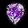
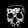
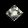
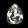
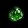
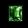
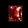
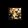
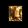
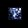

GEMAS
Las gemas preciosas añaden atributos mágicos elementales. Cuando se engarzan gemas, joyas o runas en un objeto engarzable se consigue que el objeto adquiera poderes magicos. Mientras mayor sea el grado de la gema, mayor sera su efecto magico. Hay cinco grados de gemas: fragmentada, estropeada, estándar, sin defectos y perfecta. Una vez que estén insertadas, las gemas no se puedan quitar del engarce.
El templo de la gema produce una gema o aumenta una gema (si tienes varias en el inventario escogerá una aleatoriamente) al grado siguiente.
El objeto tomara el color de la primera gema introducida en el objeto engarzable. Si un arma (por ejemplo) tiene varios tipos de gemas que añaden daño, todas estaran afectando a la vez a pesar de que en cada ataque el atacado tenga un color diferente (si es de frio se vera azul, si es de veneno se vera verde, si es de fuego se vera un fuego al golpear).
Aumento de Nivel de Gemas
Puedes aumentar un nivel las gemas usando un templo de gema o utilizando el cubo horadrico. En el cubo horadrico se tienen que introducir tres gemas del mismo tipo y transmutar, se obtendrá la misma gema en un grado superior.
Los NPCs (Personajes no Jugadores) no venden gemas.
La única posibilidad que hay es que en un juego multijugador otro jugador las vendiera antes.
Esmeraldas y Zafiros
Las duracion de la Congelación y la duracion del Veneno son acumulativos.
Amatista
| Gema | Nivel | Armas | Escudos | Yelmos/Armaduras | |
 |
Fragmentada (Chipped) | 1 | +40 Puntuacion de Ataque | +8 Defensa | +3 Fuerza |
| Estropeada (Flawed) | 5 | +60 Puntuacion de Ataque | +12 Defensa | +4 Fuerza | |
| Estándar (Standard) | 12 | +80 Puntuacion de Ataque | +18 Defensa | +6 Fuerza | |
| Sin Defectos (Flawless) | 15 | +100 Puntuacion de Ataque | +24 Defensa | +8 Fuerza | |
|  | Perfecta (Perfect) | 18 | +150 Puntuacion de Ataque | +30 Defensa | +10 Fuerza |
Craneo
| Gema | Nivel | Armas | Escudos | Yelmos/Armaduras | |
|  | Fragmentada (Chipped) | 1 | 2% Vida Robada por Impacto1% Maná Robado por Impacto | El Atacante Recibe el Daño de 4 | Repostar Vida +2Regenerar Maná 8% |
| Estropeada (Flawed) | 5 | 2% Vida Robada por Impacto2% Mana Robado por Impacto | El Atacante Recibe el Daño de 8 | Repostar Vida +3Regenerar Maná 8% | |
| Estándar (Standard) | 12 | 3% Vida Robada por Impacto2% Mana Robado por Impacto | El Atacante Recibe el Daño de 12 | Repostar Vida +3Regenerar Maná 12% | |
| Sin Defectos (Flawless) | 15 | 3% Vida Robada por Impacto3% Mana Robado por Impacto | El Atacante Recibe el Daño de 16 | Repostar Vida +4Regenerar Maná 12% | |
| Perfecta (Perfect) | 18 | 4% Vida Robada por Impacto3% Mana Robado por Impacto | El Atacante Recibe el Daño de 20 | Repostar Vida +5Regenerar Maná 19% |
Diamante
| Gema | Nivel | Armas | Escudos | Yelmos/Armaduras | |
| Fragmentada (Chipped) | 1 | +28% Daño Contra Muertos Vivientes | Todas las Resistencias +6% | +20 a la Puntuacion de Ataque | |
| Estropeada (Flawed) | 5 | +34% Daño Contra Muertos Vivientes | Todas las Resistencias +8% | +40 a la Puntuacion de Ataque | |
|  | Estándar (Standard) | 12 | +44% Daño Contra Muertos Vivientes | Todas las Resistencias +11% | +60 a la Puntuacion de Ataque |
 |
Sin Defectos (Flawless) | 15 | +54% Daño Contra Muertos Vivientes | Todas las Resistencias +14% | +80 a la Puntuacion de Ataque |
|  | Perfecta (Perfect) | 18 | +68% Daño Contra Muertos Vivientes | Todas las Resistencias +19% | +100 a la Puntuacion de Ataque |
Esmeralda
| Gema | Nivel | Armas | Escudos | Yelmos/Armaduras | |
| Fragmentada (Chipped) | 1 | +10 Daño de Veneno, Durante 3 Segundos | Resistencia al Veneno +12% | +3 Destreza | |
|  | Estropeada (Flawed) | 5 | +20 Daño de Veneno, Durante 3 Segundos | Resistencia al Veneno +16% | +4 Destreza |
|  | Estándar (Standard) | 12 | +42 Daño de Veneno, Durante 5 Segundos | Resistencia al Veneno +22% | +6 Destreza |
 |
Sin Defectos (Flawless) | 15 | +60 Daño de Veneno, Durante 6 Segundos | Resistencia al Veneno +28% | +8 Destreza |
 |
Perfecta (Perfect) | 18 | +100 Daño de Veneno, Durante 7 Segundos | Resistencia al Veneno +40% | +10 Destreza |
Rubí
| Gema | Nivel | Armas | Escudos | Yelmos/Armaduras | |
| Fragmentada (Chipped) | 1 | 3-4 Daño de Fuego | Resistencia al Fuego +12% | +10 Vida | |
| Estropeada (Flawed) | 5 | 5-8 Daño de Fuego | Resistencia al Fuego +16% | +17 Vida | |
|  | Estándar (Standard) | 12 | 8-12 Daño de Fuego | Resistencia al Fuego +22% | +24 Vida |
| Sin Defectos (Flawless) | 15 | 10-16 Daño de Fuego | Resistencia al Fuego +28% | +31 Vida | |
| Perfecta (Perfect) | 18 | 15-20 Daño de Fuego | Resistencia al Fuegp +40% | +38 Vida |
Topacio
| Gema | Nivel | Armas | Escudos | Yelmos/Armaduras | |
|  | Fragmentada (Chipped) | 1 | 1-8 Daño de Relampago | Resistencia a los Rayos +12% | 9% mas Posibilidades de Conseguir un Objeto Magico |
| Estropeada (Flawed) | 5 | 1-14 Daño de Relampago | Resistencia a los Rayos +16% | 13% mas Posibilidades de Conseguir un Objeto Magico | |
|  | Estándar (Standard) | 12 | 1-22 Daño de Relampago | Resistencia a los Rayos +22% | 16% mas Posibilidades de Conseguir un Objeto Magico |
| Sin Defectos (Flawless) | 15 | 1-30 Daño de Relampago | Resistencia a los Rayos +28% | 20% mas Posibilidades de Conseguir un Objeto Magico | |
| Perfecta (Perfect) | 18 | 1-40 Daño de Relampago | Resistencia a los Rayos +40% | 24% mas Posibilidades de Conseguir un Objeto Magico |
Zafiro
| Gema | Nivel | Armas | Escudos | Yelmos/Armaduras | |
|  | Fragmentada (Chipped) | 1 | 1-3 Daño de FrioDuracion 1.0 Segundos | Resistencia al Frio +12% | +10 Mana Maximo |
| Estropeada (Flawed) | 5 | 3-5 Daño de FrioDuracion 1.4 Segundos | Resistencia al Frio +16% | +17 Mana Maximo | |
| Estándar (Standard) | 12 | 4-7 Daño de FrioDuracion 2.0 Segundos | Resistencia al Frio +22% | +24 Mana Maximo | |
| Sin Defectos (Flawless) | 15 | 6-10 Daño de FrioDuracion 2.4 Segundos | Resistencia al Frio +28% | +31 Mana Maximo | |
| Perfecta (Perfect) | 18 | 10-14 Daño de FrioDuracion 3.0 Segundos | Resistencia al Frio +40% | +38 Mana Maximo |